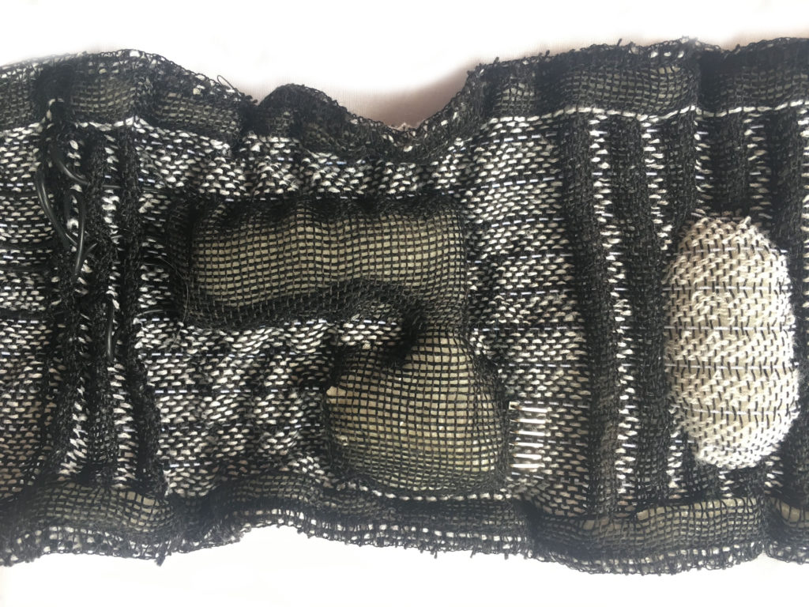

Connections #
Once you have made your traces, you must then find ways to connect different “components” together. Good connections should be tight, robust and tidy, making sure that they don’t break or short your circuit unexpectedly.
There are two primary modes of connecting: soft-to-soft, where both things being connected are flexible and stretchable, or soft-to-hard where you are connecting a soft material to a rigid material (e.g. a thread to an Arduino). Soft to hard connections are typically more prone to error than soft to soft.
There are already really great online resources that show a variety of techniques such as Kobakant’s overview of connection techniques and detailed descriptions of many methods in their “Connections” category. There are also many techniques in this summary produced by e-textiles summer camp 2017.
Hard-to-Soft #
Look no further than Kobakanthttps://www.kobakant.at/DIY/?p=1272 for a complete overview
Metal Snaps #
http://www.rachelfreire.com/second-skin
https://www.flickr.com/photos/rachelfreirestudio/albums/72157686333010996
Soldering #
Some soft materials can be directly soldered to or soldered upon, allowing for more complex geometries and tightly packed connections. In non-wearable applications, I have had luck twisting a conductive yarn around a looped stranded or solid core wire, and soldering the wire to itself (catching the thread in between).
Soldering to headers from a fabric using a pocket structure:
https://www.instructables.com/id/Simple-E-textile-Connector/
Structural Integration #
When you have conductive materials integrated into your textile structure, one simple possibility is to simply integrate traditional wires into the structure so that the structure, itself, holds the materials in close contact. This is what I did in this project, essentially twisting soft and more sturdy wires together at weaving time. In a different project, we soldered silicone coated wires directly to an arduino pro mini and then integrated the arduino into a pocket within the woven structure, then wound the edges of the wire and yarn together within the fabric itself. You can see the FTDI connector pocking out of the fabric below, with the black wires routing through the structure.

Soft-to-Soft #
Knots #
The first method can be simply knotting materials together. In soft-to-soft, this can be as simple as typing a weavers knot, ensuring it will remain tight, and then trimming long ends to ensure against shorting. In soft to hard connections, one typically can knot around the through-hole of a hard component. In this case, it can be wise to coil the material through the hole a few times to ensure good contact between the metal fibers in your soft material and the metal connections on the component you are connecting to. Frequent method of using knots include knotting conductive material around a metal snap and on the other side of the metal snap, soldering on a wire.
Temporary Connection Methods #
There are also alternatives to using something like alligator clips when testing your circuit by using materials, like pins and clips, that have been designed to hold to textile structures.
Irene Posch’s Collection of Handmade Connectors for Soft Electronics:
http://www.ireneposch.net/tooling/
Adapted Seem Ripper:
https://www.plusea.at/?p=2220
| Process | Example |
|---|---|
| Combing and Carding | |
| Spinning | |
| Extruding/3D printing | |
| Plying | Plying the connecting materials together or plying one material around another |
| Braiding | Braiding the connecting materials together in sheath or connecting core and sheather |
| Paper-Making | |
| Growing | |
| Knitting | |
| Weaving | |
| Embroidery | Embroidering directly into the through-holes of hardware. |
| Felting | Connecting with needle or wet felting? |
| Coating | |
| Dying | |
| Bonding | |
| Etching | |
| Pleating | |
| Electrospinning | |
| Sewing | Sewing and knotting is most common or sewing onto snaps and snapping together. |